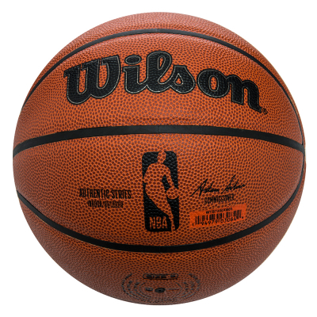

Pelota de baloncesto
Sumérgete en el juego con nuestro balón de baloncesto Trashcicle, una fusión de rendimiento y conciencia ecológica. Diseñado para destacar en la cancha y cuidar del planeta, este balón no solo ofrece un agarre excepcional y durabilidad, sino que también contribuye a la causa del reciclaje. Únete al movimiento Trashcicle y haz tu parte por el medio ambiente mientras disfrutas de cada jugada.
¡Consigue tu balón ahora y anota puntos no solo en la cancha, sino también en sostenibilidad!
Cantidad de puntos necesarios: 825.